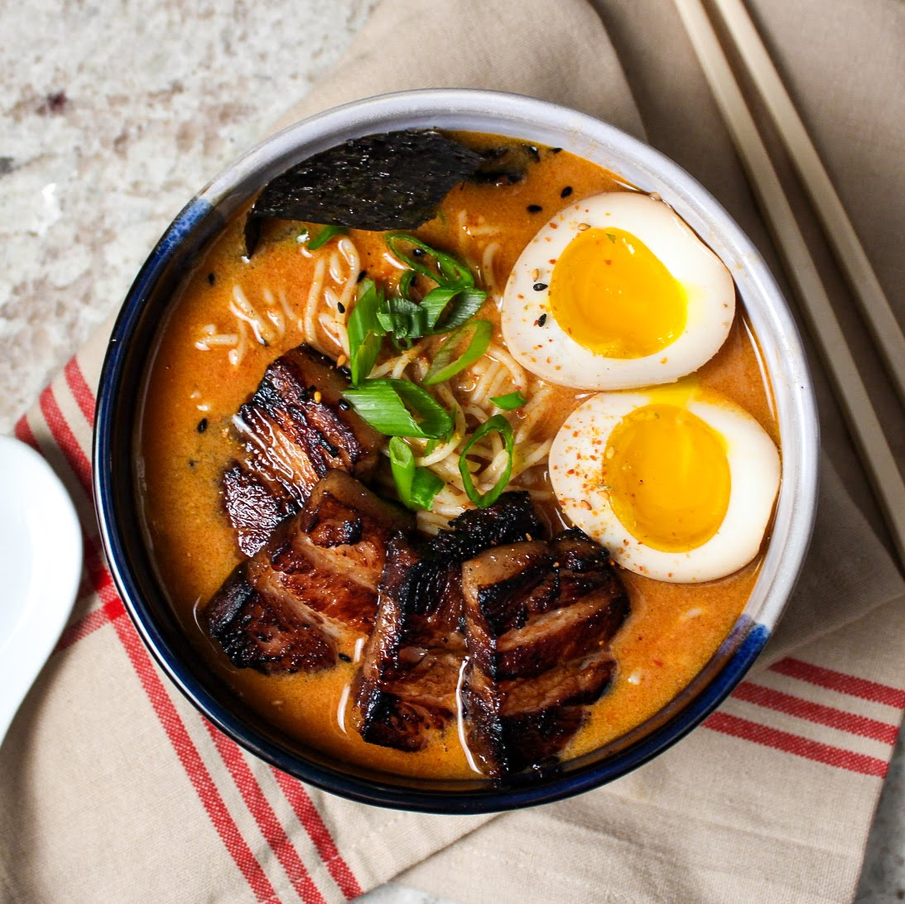

Home
Spicy Tonkatsu Ramen

INGREDIENTS
- pork neck bones
- chicken carcass
- onions
- large piece of ginger
- shallots
- garlic
- green onions
- dried shiitake onions
- white miso paste
- red miso paste
- douban chili paste
- sesame oil
- sambal oelek
- pork belly
- soy sauce
- sake
- mirin
- sugar
- bread flour
- baking soda
- avocado oil
- togarashi
- ground pork
- plain soy milk
- eggs
- nori
- enoki mushrooms or wood ear mushrooms
- bamboo
PREPARATION
- Place the pork bones into a large stock pot, and cover with water. Bring the water to a boil and cook for 10 minutes.
- Skim all of the gunk off of the top of the water. Dump the whole pot out, saving the bones, and fill with fresh water. This is cleaning the bones and will make a better stock.
- Place the rest of the ingredients into the post, cover, and let simmer for 8-10 hours, replacing the lost water as necessary to keep the ingredients covered with water. By the end of the cook time many of the chicken bones should be totally broken down, and the pork neck bones should be easily pierced with a knife.
- Let cool for a while, and then remove all of the solids you can with tongs and a slotted spoon. Next, strain the broth with cheesecloth or a large clean kitchen towel. I have found the easiest way to do this is to place the cheesecloth in several layers over a large bowl that will fit all of the broth, pour the broth in, and then gather the edges of the cloth together to pull all of the solids out of the broth. You can do this however is easiest for you though!
- This will make enough broth for many bowls of ramen. Freeze the extra to make it easier next time